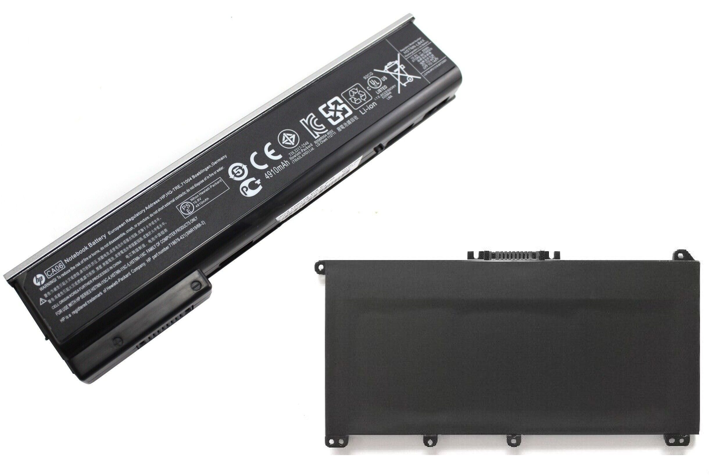

Analisis de Problemas
Sintoma: Poca Duracion de Bateria o Carga Muy Lenta
La bateria dura mucho menos de lo normal, incluso con poco uso, o tarda un tiempo excesivamente largo en alcanzar el 100% de carga.
Soluciones y Recomendaciones:
- Verificar Salud de Bateria: En Windows, puedes generar un informe de energia (`powercfg /batteryreport` en CMD) para ver la capacidad diseñada vs. la capacidad actual. En macOS, ve a "Informacion del Sistema" > "Alimentacion".
- Optimizar Uso de Energia: Ajusta el plan de energia, reduce el brillo de la pantalla, desactiva Wi-Fi/Bluetooth si no los usas, y cierra aplicaciones en segundo plano que consuman mucha energia.
- Calibrar Bateria: Deja que la bateria se descargue por completo y luego cargala al 100% sin interrupciones. Esto puede ayudar a recalibrar el medidor.
- Reemplazo de Bateria: Si la capacidad ha disminuido drasticamente (ejemplo: menos del 50% de su diseño original), es hora de considerar un reemplazo.
Sintoma: Bateria No Carga o No es Detectada
La laptop funciona solo con el cargador conectado, el icono de la bateria muestra "Conectado, sin cargar", o la bateria no aparece en absoluto en el sistema.
Soluciones y Recomendaciones:
- Verificar Cargador: Asegurate de que el cargador esta funcionando correctamente, que no tenga cables rotos y que sea el cargador original o uno compatible con el voltaje y amperaje correctos. Prueba con otro cargador si es posible.
- Reinstalar Controlador de Bateria: En el Administrador de Dispositivos (Windows), expande "Baterias", haz clic derecho en "Bateria con metodo de control compatible con ACPI de Microsoft" y selecciona "Desinstalar dispositivo". Luego, reinicia la laptop para que Windows lo reinstale automaticamente.
- Actualizar BIOS/UEFI: A veces, una actualizacion de firmware puede resolver problemas de gestion de energia.
- Falla de Hardware: Si nada funciona, podria ser un problema con la bateria misma, el puerto de carga o el circuito de carga en la placa base, requiriendo asistencia tecnica.
Sintoma: Hinchazon de Bateria
La base de la laptop se levanta, el teclado o el trackpad sobresalen, o la bateria visiblemente se ve inflada. Esto es un signo de una falla grave y potencialmente peligrosa.
Soluciones y Recomendaciones:
- Desconectar y Apagar Inmediatamente!: Una bateria hinchada puede ser peligrosa (riesgo de incendio o explosion). Apaga la laptop, desconectala de la corriente y, si es extraible, retirala con cuidado.
- No Pinchar ni Dañar: Nunca intentes pinchar o desinflar una bateria hinchada. Esto es extremadamente peligroso.
- Reemplazo Profesional y Reciclaje: La bateria debe ser reemplazada por una nueva y original o de alta calidad. La bateria hinchada debe ser desechada en un centro de reciclaje especializado en baterias, no en la basura comun.
- Evitar Uso Continuo Enchufado: Evita mantener la laptop conectada al cargador al 100% de su capacidad por tiempos prolongados si no es necesario. Algunos fabricantes ofrecen modos de "carga inteligente" para proteger la bateria.